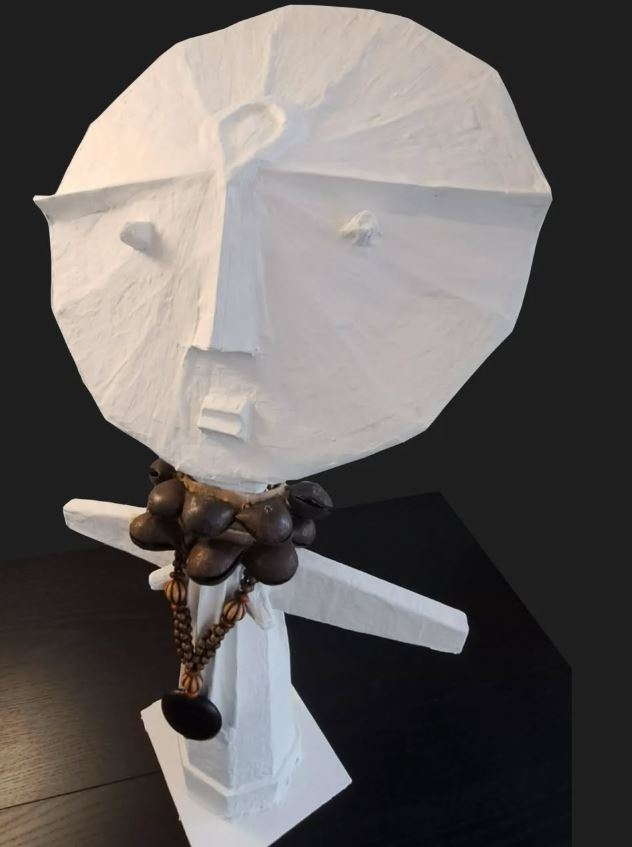
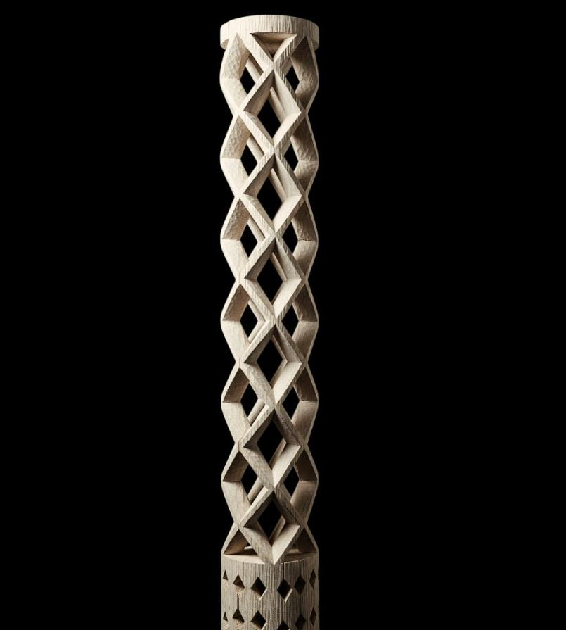
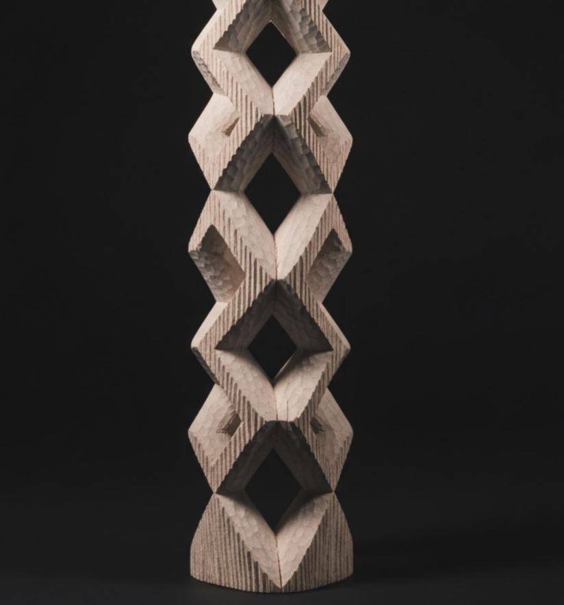
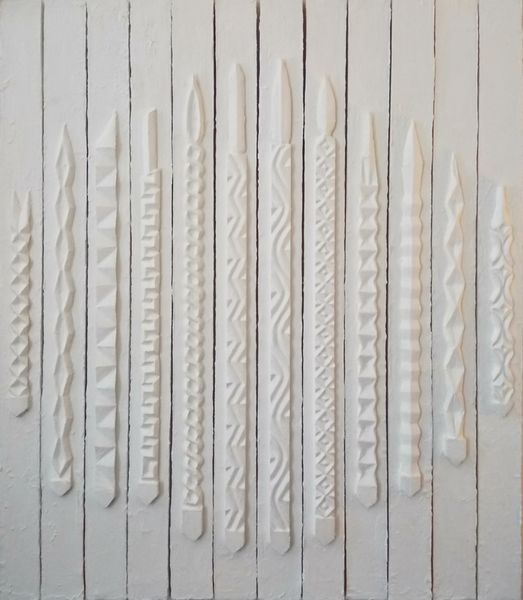

Ashanti Doll — Contemporary Interpretation
A curated selection of sculptures and bas-reliefs by Innocent Twagirumukiza. Each page opens to a dedicated work presentation, with the main image now opening directly in full size in a new tab for a cleaner viewing experience.



